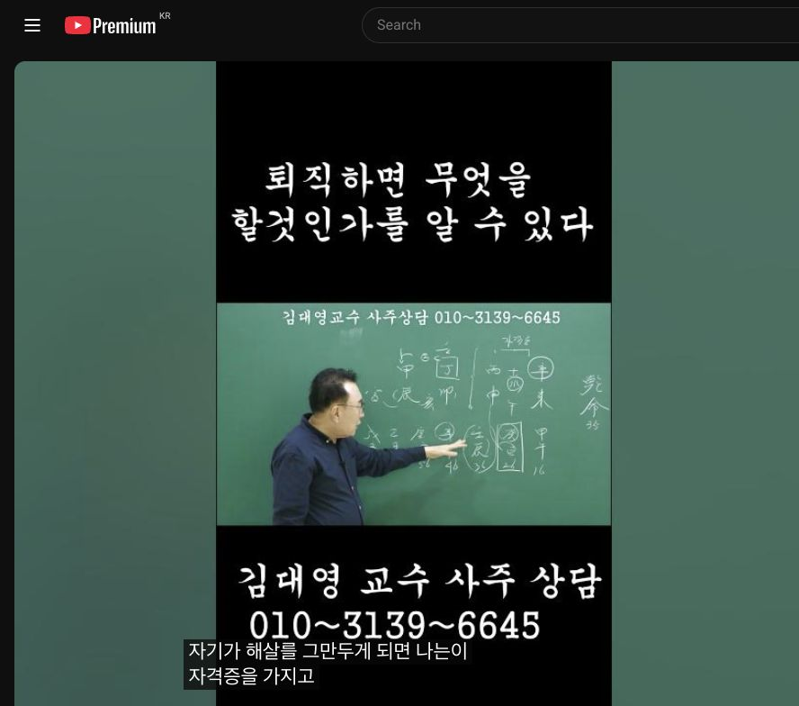

남촌물상TV 전체 문서 › Shorts S0123
회사를 퇴직하면 무엇을 할것인가를 알 수 있다

| 문서 번호 | S0123 (Shorts (쇼츠)) |
|---|---|
| 영상 URL | https://www.youtube.com/watch?v=zj11HKHh9mE |
| 영상 ID | zj11HKHh9mE |
| 게시일 | 2025-11-15 |
| 길이 | 1:00 (60초) |
| 조회수 | 2,070회 (수집 시점 기준) |
| 카테고리 | Education |
| 자막 | ko (자동생성) |
| 수집 시각 | 2026-08-30 17:03 (KST) |
영상 설명 (YouTube 설명 원문 그대로)
사주상담 # 물상론 사주# 명리학# 성명학# 궁합# 택일#
물형상# 운명학# 남촌물상론#
전체 자막 (26구간 · 타임스탬프 클릭 시 해당 장면으로 이동)
[0:00]자기 생각은 정림 한목하죠. 뭐가
[0:03]됐어? 을목이 됐지. 여기는 이미
[0:06]하로 자격증 있지. 그러면 나는
[0:08]정림 한목 을목 여기 타고
[0:09]올라가야지. 그럼 벌써이 사람 뭐해?
[0:11]이쪽으로 마음이 쏠리고 있는 거지.
[0:13]목이라는 것은 교육, 사회복지 다
[0:16]이런 쪽의 관계성이라 관계성이요.
[0:18]뿌리가 튼튼하니까 그쪽이 관계성이
[0:19]크지. 그리고이 사람은 이미이 대운에
[0:23]자기가 해살를 그만두게 되면 나는이
[0:26]자격증을 가지고 정림한목 울목에서
[0:29]등락을 하게 되면 내가 이거 직업으로
[0:31]벌어먹고 살겠네.이 생각을 여기서
[0:34]읽어내는데
[0:36]여기가 지금 진토예요.
[0:38]>> 너는 그러면 이게 유통 계통인데 그럼
[0:41]감목에 사회복제 유통시키면 되지.
[0:43]>> 네.
[0:44]>> 사회복지를 가지고 유통시키면 된다.
[0:46]아 뭘 할 건데?
[0:48]감목이 성경돼 있으니 사회복지에 대한
[0:51]유통업을 하면 너는 돈을 막 잘
[0:53]되겠네.이 이 생각을이 36대에
[0:57]여러분들이 마음으로 안심법을 읽어낼
[0:59]줄 알아야
칠판 원국 판독 (영상 프레임을 AI가 시각 판독 · 원판 대조 필수)
乾造
천간
戊
천간
癸
천간
천간
辛
지지
辰
지지
지지
지지
未
판독 신뢰도: 낮음
판독 노트: 녹색 칠판: 戊辰·癸?·甲?·(辛)未 원 표시 추정+대운(6~46세), 우측 乾命 46세(남). 일부 주 가림으로 확정 불가 · 시점 0:27 · 해당 장면 보기↗
자막은 YouTube에서 제공하는 한국어 자동음성인식(ASR) 트랙의 원문입니다. 고유명사·한자 용어·숫자 표기에 자동인식 특유의 오류가 있을 수 있어, 원문을 가능한 한 그대로 보존했습니다. 위에 칠판 원국 판독 섹션이 있는 영상은 화면 프레임을 AI가 시각 판독한 것으로 신뢰도 표기를 확인하고, 없는 영상은 화면 도표가 문서에 포함되지 않습니다.